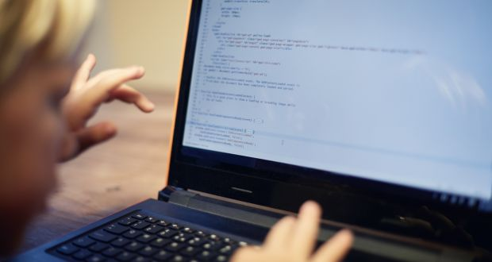

The island of saints and scholars is as redundant a phrase as any other Irish cliche we choose to perpetuate.
That being said, the nation’s reputation for religious devotion and high levels of literacy wasn’t fabricated by the geniuses at Carrolls Irish Gift Store. It was once true. For it to be true again, however, your command of the modh coinníolach can’t help you. Modh coinníolach, mo problems.
A whole new tongue – the language of computers – will be what separates the educated from the ignorant masses of tomorrow. Understanding how to write code for computers is already becoming one of the most highly prized skill sets anyone can have in the global economy. Here’s why:
All major tech companies, from Google to Facebook, aggressively compete to hire gifted young coders. In the Silicon Valley area, for example, some reports suggest engineering graduates from Stanford University expect their starting salary to be nothing less than $100,000-120,000.
“It’s fair to say that for school-leavers looking to maximise their potential income, few other skills open the door to as many well-paying and varied careers,” says Prof Rory O’Connor, head of the school of computing at Dublin City University.
Coding bridges the universal divide. It is the one language that connects different nationalities and countries. “We live in trying times and are pummelled each day by the news of cultural divisiveness,” says Doreen Lorenzo, founding director of the centre for integrated design at the University of Texas in Austin and board member and adviser for several startups. “If we look for common ground to bring countries together, coding is one of the rare exceptions. Everyone speaks the same language. There are no prejudices and no boundaries. People are unified to create.
While many more jobs will continue to be lost to automation, ultimately it is coders who control what is automated. “You will always be in demand despite the predictions of your demise,” says Lorenzo. “Machines are machines. As they become smarter the fear is that human jobs may be replaced by the machine. That is true, but someone will have to code those machines. As those machines learn and begin to “code” themselves, humans will create and programme the next evolution of artificial intelligence. After all, humans have the empathetic ability to see when something new should be created.”
Coding is used in almost all aspects of life and work now, be it directly or indirectly. It’s not just for companies in the tech sector. “An increasing number of businesses rely on computer code, from accountants using complex spreadsheets, to artists and designers using graphics software,” says Prof O’Connor. “Tensions between engineers and business people can arise due to a misunderstanding or lack of appreciation for the engineer’s job. An understanding of coding, across business functions, can eliminate such disconnect.”
Literature and maths are two disciplines frequently polarised – formally and academically but consequently by individuals also. Coding straddles the divide between the two. It is the language of maths and has the power to be used for both creative and technical pursuits. “Computational thinking is a vital skill for the future,” says O’Connor. “While not every job in the future will involve coding, by learning to code or at least to understand the basic language of computers, you will develop an appreciation of how software engineers use maths and algorithms in code and thereby learn how to problem solve and to think both logically and creatively.”
Programming is still in its infancy. In fact, two of the very first programming languages ever invented are still being used today: Fortran (developed in 1957) and Cobol. “This does not mean that we are using old technology,” says Josue Balandrano Coronel from the Texas advanced computing centre at the University of Texas at Austin. “Those programming languages are being used in very narrow contexts. Even so, this shows us programming has barely started on its own evolutionary path. UNIX was developed in 1969 and TCP/IP (the protocol powering “the internet”) was introduced as the standard in 1982 while the first iPhone was introduced in 2007. So although it may appear as if technology is advancing rapidly, we are witnessing something that is growing exponentially with much room for improvement. Fifty years from now, programming will not be anything like we know it today.”
Some will remember the scenes from the 1980s as thousands of coal miners took to the streets in pointless protest against the inevitable demise of their industry. Industries rise and fall as new technologies emerge. But we’re not likely to see code miners losing their jobs anytime soon. “This is the beauty of being a software developer,” says Coronel. “Not a single piece of software is built in solitude. There’s a team behind it, meaning two projects can never be the same. This makes programming an art. There will always be problems to solve. Computers are and will continue to be the cornerstone to building great things.”
Second only to AI, the talk of the town for techies is “big data”. Being able to analyse large sets of data has always been an important yet difficult task. However, while we may have far easier access to data, it is arguably harder than ever to make sense of. Regardless, answers to fundamental questions are literally all around us but only those who speak the language of computers will ever be able to translate them. “Analysing data is not only beneficial to getting answers but also to understanding which questions we should be asking,” says Coronel.